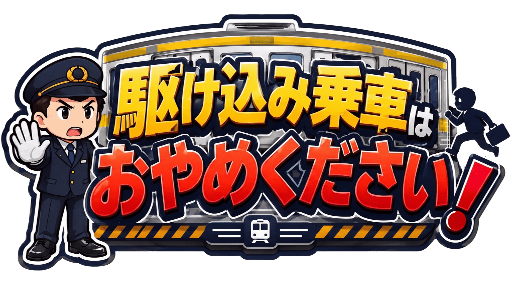

端末をヨコにして
お楽しみください。
➔
📱
【お知らせ】当ゲームは「横画面」専用です。スマートフォンを横向きに回転するとゲームが開始されます。

ゲームスタート
ランキング（実装予定）
遊び方
遊び方
発車間際の列車に駆け込んでくるお客様を阻止しましょう！
【ルール】
マウス（スマホは画面スワイプ）で駅員を左右に操作します。
駆け込んでくるお客様に体当たりして、ご乗車を阻止してください。
お客様が駆け込み乗車に成功すると「遅延時間」が増加します。
遅延時間が限界に達するとゲームオーバーです。
【操作方法】
PC操作：マウスを左右に動かすと駅員が追従します。
スマホ操作：画面を左右にスワイプすると駅員が追従します。
レベル
1
/5
停車時間
30.0
秒
得点
0
点
阻止
0
人
突破
0
人
レベル ★ 終了
まもなく次のステージが始まります。
開始まであと
5
秒
--- 運行結果報告 ---
総阻止成功数
0
回 (+
0
点)
総阻止失敗数
0
回 (-
0
点)
総合評価スコア
0
点
【駅長からの評価】
ここに評価が入ります。
もう一度挑戦
タイトルに戻る